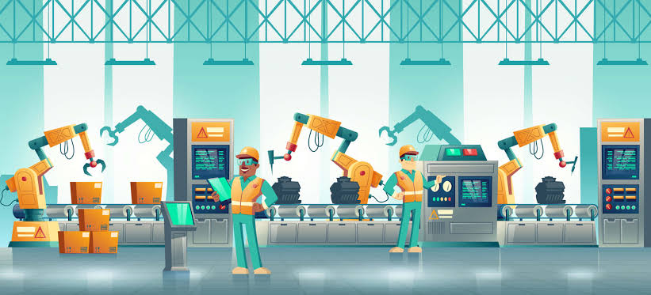

6 min read
How AI Is Reshaping the Modern Enterprise
Explore how organizations are using cognitive agentic workflows and automated intelligence to improve decisions and operational scale.
Explore practical insights, technology trends, and expert perspectives that help businesses understand what's next and make smarter digital decisions.
Explore how organizations are using cognitive agentic workflows and automated intelligence to improve decisions and operational scale.
How modern cloud topologies help organizations improve scalability, resilience, flexibility, and operational efficiency across distributed systems.
Proactive zero-trust architectures and automated SOC telemetry that protect applications, infrastructure, and distributed enterprise data.
 5 min read
5 min read
How enterprises eliminate legacy technical debt through strangler patterns and composable API architectures for sustained agility.

6 min readIndustrial IoT, digital twin telemetry, and autonomous quality control driving real-time intelligence across modern shopfloors.
 7 min read
7 min read
A forward-looking analysis of quantum readiness, synthetic intelligence, and sustainable low-carbon cloud computing models.
Let's explore how the right technology strategy can help your organization solve today's challenges and prepare for tomorrow.
Artificial intelligence has rapidly transitioned from an experimental research sandbox into a core operational backbone for modern enterprise strategy. Organizations that master AI integration are outpacing competitors in agility, customer responsiveness, and operational efficiency.
Traditional robotic process automation (RPA) was limited to rigid, rule-based workflows. Today, autonomous multi-agent AI ecosystems are equipped with reasoning capabilities, understanding unstructured context across supply chains, financial transactions, and customer inquiries.
The most successful enterprise adopters focus on high-impact vertical use cases: predictive inventory replenishment, automated contract intelligence, real-time cyber defense correlation, and hyper-personalized consumer recommendation engines.
A resilient cloud strategy is no longer just about hosting infrastructure offsite; it is the fundamental platform that dictates how quickly a modern enterprise can build, deploy, and scale digital products.
As enterprises embrace hybrid and multi-cloud topologies, operational complexity can escalate. Implementing mature Infrastructure as Code (IaC), GitOps pipelines, and active FinOps governance ensures predictable costs and automated elasticity during peak workloads.
Standardized developer platforms built on scalable cloud primitives empower engineering squads to release features in hours rather than months, creating sustained competitive momentum.
The perimeter is dead. With distributed workforces, edge devices, and ubiquitous cloud APIs, enterprise defense requires an uncompromising Zero-Trust architecture backed by automated threat hunting.
Zero-Trust mandates: never trust, always verify. Every request—whether originating from inside or outside the network—is authenticated, authorized, and dynamically evaluated based on risk signals.
Security is no longer merely an IT concern; it is a prerequisite for customer trust, regulatory compliance, and business continuity.
Legacy technical debt is the single greatest bottleneck to innovation. Modernizing legacy systems is no longer a technology upgrade project—it is a critical business imperative for market survival.
Replacing monolithic mainframes all at once carries immense operational risk. Incremental modernization via API facades and event-driven microservices allows enterprises to modernize mission-critical systems without operational disruptions.
Transforming legacy databases into modern streaming data pipelines unlocks actionable business intelligence for front-line decision makers.
The convergence of Industrial IoT (IIoT), edge compute, computer vision, and digital twins is giving rise to autonomous manufacturing facilities capable of self-optimization and self-healing.
By mapping physical production lines to virtual digital twins in real time, industrial leaders can run predictive stress simulations, balance production loads, and eliminate bottlenecks before they occur.
Augmented reality interfaces and mobile telemetry dashboards provide factory operators with immediate, actionable machine health diagnostics.
The next era of computing is taking shape at the intersection of spatial interfaces, quantum algorithms, synthetic intelligence, and sustainable green cloud infrastructure.
While full quantum commercialization is emerging, forward-thinking organizations are already deploying post-quantum cryptographic standards to safeguard sensitive data against future decryption vectors.
Building modular, experimentation-friendly digital architectures allows modern organizations to adopt emerging technologies quickly without rewriting foundational systems.